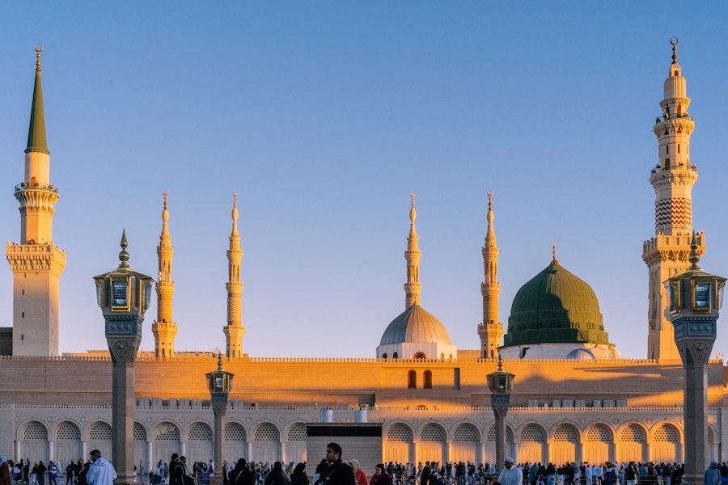
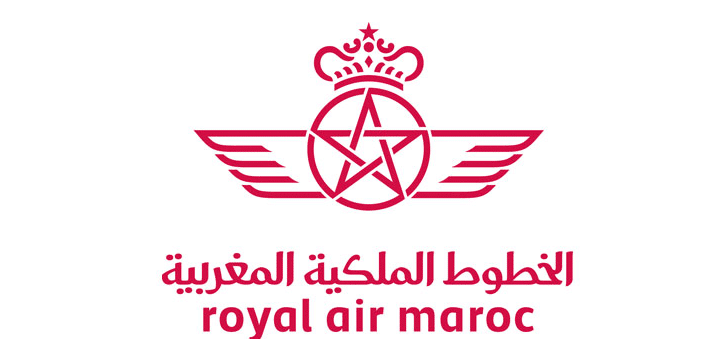
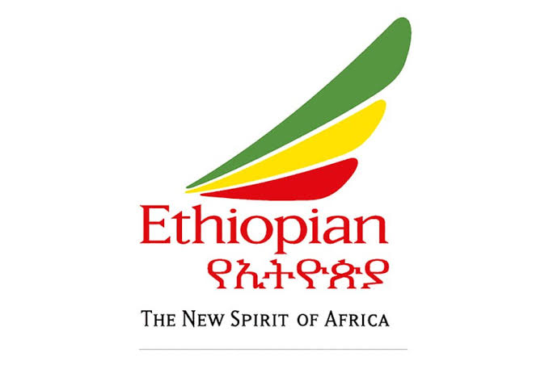
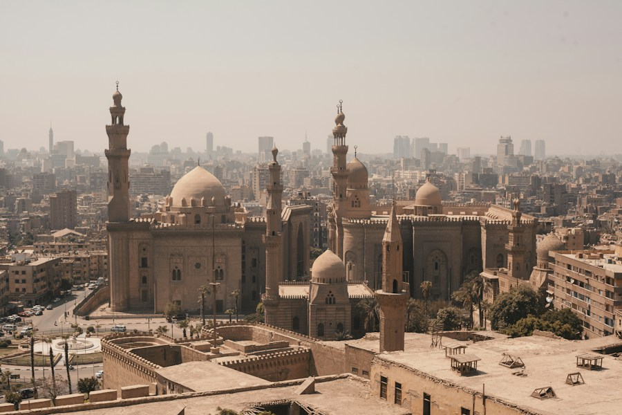
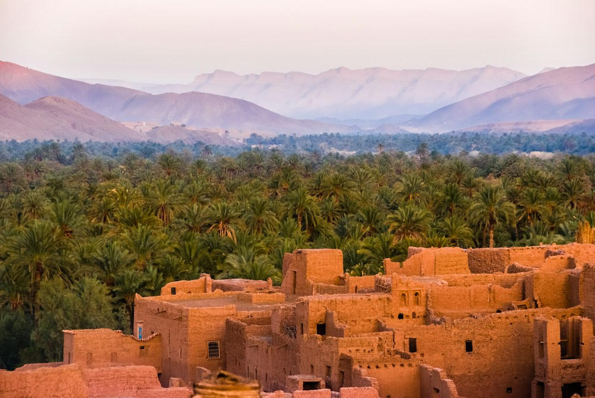

Billets d’avion
Précisez votre trajet, vos dates et vos besoins. AMZI TRAVEL étudie les options auprès des compagnies et vous présente les tarifs et les conditions disponibles.
Demander un billetAu départ du Tchad
Demander un billet
Un départ du Tchad.
Plusieurs horizons.
Une sélection de compagnies desservant N’Djamena.

Royal Air Maroc
Ethiopian AirlinesAir FranceTurkish AirlinesASKYEgyptairAir AlgérieCamair-CoLogos présentés à titre d’information, sans classement de trafic ni indication de partenariat commercial avec AMZI TRAVEL. Transporteur et itinéraire confirmés sur votre devis.
Égypte, Arabie saoudite, Turquie, Maroc, France, Canada et États-Unis.
Aucune destination ne correspond à ces critères. Modifiez votre recherche ou précisez le pays souhaité dans votre demande.
Demander une autre destination ↗Les trajets et tarifs sont précisés sur votre devis, selon les disponibilités des compagnies et des agences partenaires.
Repères de prix pour préparer votre prochain départ.
Prix publics indicatifs observés en ligne, non garantis par AMZI. Disponibilité et montant final à confirmer, avec les éventuels frais de service de l’agence.
| Destination | Voyage et dates | Prix observé | Source publique | Votre demande |
|---|---|---|---|---|
| Le CaireDépart de N’Djamena | Aller simple12 novembre 2026 | ≈ 280 750 FCFA428 € / personne | Egyptair · relevé Kiwi.com ↗ | Demander confirmation ↗ |
| Le CaireDépart de N’Djamena | Aller-retour15–18 novembre 2026 | ≈ 529 357 FCFA807 € / personne | Egyptair · relevé Kiwi.com ↗ | Demander confirmation ↗ |
| ParisDépart de N’Djamena | Aller-retour17–25 janvier 2027 | ≈ 358 153 FCFA546 € / personne | Royal Air Maroc · relevé GO Voyages ↗ | Demander confirmation ↗ |
| CasablancaDépart du Tchad | Selon votre projet | Sur devis | Dates et conditions à préciser | Demander un tarif ↗ |
| IstanbulDépart du Tchad | Selon votre projet | Sur devis | Dates et conditions à préciser | Demander un tarif ↗ |
| Djeddah / MédineDépart du Tchad | Selon votre projet | Sur devis | Dates et conditions à préciser | Demander un tarif ↗ |
| MontréalDépart du Tchad | Selon votre projet | Sur devis | Dates et conditions à préciser | Demander un tarif ↗ |
| New YorkDépart du Tchad | Selon votre projet | Sur devis | Dates et conditions à préciser | Demander un tarif ↗ |
Conversion indicative : 1 € = 655,957 FCFA (XAF), parité BEAC, arrondie au franc. Bagages, taxes, escales, conditions de modification et frais éventuels à vérifier sur le devis. Ces relevés ne constituent pas des offres commerciales d’AMZI.
Prochaine révision nécessaire avant le 7 novembre 2026. Les prix chiffrés seront masqués après cette date en attendant un nouveau relevé.
Consulter toutes les destinations et les tarifsUne destination, une rencontre, un moment à vivre.

Photographies d’illustration. Prestations et disponibilités à préciser sur devis.
Aller simple ou aller-retour, dates fixes ou flexibles : expliquez-nous votre projet. Nous étudions les options auprès des compagnies et des agences partenaires.
Étudier mon trajet Tarif et conditions sur devisRetrouver vos proches, découvrir un pays ou préparer votre pèlerinage : AMZI TRAVEL fait le lien entre votre besoin et les prestataires du voyage.
Parlons de votre départSchéma de destinations, sans garantie de liaison directe. Escales et transporteurs précisés dans votre proposition.
Bagages, voyage en famille, correspondances ou séjour via une agence partenaire : indiquez ce qui compte pour vous. Les possibilités et les conditions seront étudiées avec les prestataires concernés.
Décrire mon projetUn billet, un séjour ou un pèlerinage :
un interlocuteur au Tchad pour votre demande.
Précisez votre trajet, vos dates et vos besoins. AMZI TRAVEL étudie les options auprès des compagnies et vous présente les tarifs et les conditions disponibles.
Demander un billetVous recherchez une proposition de séjour ? L’agence relaie votre besoin auprès des agences de voyage partenaires et précise avec vous les prestations proposées.
Préparer mon séjourPour votre projet d’Omra ou de Hajj, échangez sur les possibilités à étudier avec les partenaires. Le programme, les prestations et les conditions seront précisés sur devis.
Parler de mon pèlerinagePrécisez votre projet : Omra ou Hajj, période souhaitée et nombre de voyageurs.

AMZI TRAVEL est une agence de voyage dont le siège est au Tchad. Elle accompagne les clients dans leurs projets de départ et joue un rôle d’intermédiaire auprès des compagnies aériennes et des grandes agences de voyage.
Vous échangez avec un interlocuteur local pour préciser votre besoin. AMZI TRAVEL consulte les prestataires concernés et vous présente les options disponibles, leurs tarifs et leurs conditions avant votre décision.
Votre départ du Tchad, votre destination et le service recherché.
Compagnies aériennes pour les billets et agences partenaires pour les séjours.
Le prestataire, les prestations, les frais et les conditions sont précisés avant confirmation.
Partir pour retrouver sa famille, développer une activité, rejoindre son lieu d’études ou accomplir un pèlerinage : chaque départ a une raison. AMZI TRAVEL vous aide à transformer ce projet en un itinéraire préparé, compris et adapté à vos besoins.
Parlons de votre voyageAMZI TRAVEL est une agence de voyage basée au Tchad. Nous faisons le lien entre les voyageurs, les compagnies aériennes et les agences de voyage partenaires pour préparer des billets, des séjours et des projets de pèlerinage.
Notre rôle est concret : comprendre votre besoin, consulter les prestataires, vous expliquer les possibilités et vous aider à examiner la proposition. Vous disposez ainsi d’un interlocuteur local pour mettre de l’ordre dans les choix qui accompagnent un départ.
Notre ambition est de rendre la préparation du voyage plus claire et plus accessible : un trajet cohérent, un budget expliqué et des informations utiles avant de prendre votre décision.
Un billet ne résume pas tout le voyage. La ville de départ, le temps nécessaire pour rejoindre l’aéroport, les escales et les bagages comptent autant que le prix affiché.
Précisez votre ville de résidence dès le premier échange. Nous intégrons à la préparation le temps que vous prévoyez pour rejoindre N’Djamena, afin de ne pas construire le départ international sur une arrivée trop serrée.
La solution : penser le trajet dans son ensemble.Nous distinguons le prix du billet, les bagages, les prestations demandées et les éventuels frais d’agence. Si vos dates sont souples, nous étudions les possibilités sur plusieurs jours pour vous aider à comparer le coût complet.
La solution : comparer ce que vous paierez réellement.Durée de correspondance, aéroport de transit, changement de terminal et conditions des billets : ces éléments sont examinés avec vous. Ils permettent de choisir un itinéraire compatible avec votre situation et vos documents.
La solution : comprendre chaque étape avant de partir.Le formulaire permet de poser votre demande, puis le téléphone, WhatsApp ou l’e-mail permettent de la préciser. Vous pouvez commencer par votre destination, vos dates et le nombre de voyageurs, sans préparer un dossier compliqué.
La solution : un échange simple avec un contact au Tchad.Voyage avec des enfants, visite à un proche ou déplacement à plusieurs : indiquez les âges, les bagages et les contraintes de chacun. Nous étudions le trajet en tenant compte du rythme du groupe.
Une réunion, une mission ou une rentrée fixe votre calendrier. Nous partons de cette échéance pour étudier les dates d’arrivée, le retour et les conditions de modification du billet.
Nous recueillons votre période souhaitée, le nombre de pèlerins et les prestations recherchées. Le projet est ensuite étudié avec les prestataires concernés pour préciser le programme, l’hébergement et les déplacements proposés.
Vous cherchez un séjour au Maroc, en Turquie, en Égypte ou ailleurs ? Nous transmettons vos envies et votre budget aux agences partenaires pour étudier une proposition de voyage adaptée.
Égypte, Arabie saoudite, Turquie, Maroc, France, Canada et États-Unis : nos destinations prioritaires répondent à des projets de découverte, de visites, de déplacements et de pèlerinage. Vous avez un autre pays en tête ? Votre demande commence de la même façon : par un échange avec l’agence.
Explorer les destinationsDestination, dates, départ au Tchad, nombre de voyageurs, budget et besoins particuliers : nous posons les bases de votre demande.
Nous consultons les compagnies ou les agences partenaires selon le service recherché, puis examinons les possibilités de trajet et de prestations.
Vous examinez une proposition avec les dates, les prestataires, les prestations, le prix et les conditions utiles à votre décision.
Après votre accord et selon les conditions de la proposition, les étapes de confirmation sont précisées avec l’agence. Vous conservez les références et documents liés à votre voyage.
Un échange centré sur votre situation, vos contraintes de départ et la façon dont vous souhaitez être recontacté.
Nous mettons en évidence ce qui est compris, ce qui reste à ajouter et les conditions du billet ou du séjour, pour vous aider à comparer les propositions.
Le prestataire, les dates et le montant sont examinés avant confirmation. Votre demande de devis vous permet d’engager la discussion sans réserver automatiquement.
Nous commençons par les informations nécessaires au projet. Les documents complémentaires sont précisés au cours de l’échange avec l’agence.
Lorsque plusieurs personnes voyagent, les besoins ne sont pas toujours les mêmes. Un enfant peut avoir besoin d’un trajet moins fatigant ; un parent peut souhaiter une correspondance plus confortable ; un voyageur peut transporter davantage de bagages.
Nous vous invitons à préciser ces besoins dès le début. Les âges des enfants, l’accompagnement souhaité et les contraintes horaires aident à étudier une proposition cohérente pour l’ensemble du groupe.
Pour une visite familiale à l’étranger, indiquez aussi la ville où vous devez réellement arriver. Une destination finale différente de l’aéroport principal peut changer l’organisation de votre séjour et votre budget.
Préparer notre voyage en famille ↗La bonne proposition est celle que vous comprenez et qui correspond à votre voyage, pas seulement celle qui affiche le montant le plus bas.
Comparer deux billets suppose de regarder les mêmes éléments : trajet, dates, taxes affichées, bagages et frais associés. Un prix moins élevé peut correspondre à une durée plus longue ou à des conditions différentes.
Votre budget indicatif nous aide à orienter la recherche. Nous séparons les prestations que vous demandez pour que vous puissiez choisir en connaissance de cause.
Précisez la nationalité des voyageurs, les pays traversés et les documents dont vous disposez lors de l’échange avec l’agence. Les conditions d’entrée et de transit sont à vérifier auprès des autorités et des transporteurs concernés avant confirmation.
La préparation du trajet et celle des documents doivent avancer ensemble. Un billet ne remplace pas une autorisation d’entrée ni une admission dans un établissement.
Indiquez ce que vous prévoyez d’emporter, surtout pour un long séjour ou un déplacement en famille. Les règles varient selon le transporteur, le trajet et le billet choisi.
Si une assistance ou une prestation particulière est nécessaire, signalez-la avant de confirmer pour en examiner les conditions avec le prestataire.
Avant de choisir, regardez les possibilités de modification et d’annulation. Une date de retour incertaine mérite une attention différente d’un voyage dont le calendrier est déjà fixé.
Si votre projet change, contactez l’agence avec votre référence et les nouvelles dates souhaitées. La demande pourra être examinée selon les règles du billet et les disponibilités du prestataire.
Notre mission
Mettre à votre portée un accompagnement local pour étudier les billets et les prestations de voyage auprès des compagnies aériennes et des agences partenaires.
Notre vision
Faire de la préparation un temps utile : comprendre les choix, anticiper les étapes du départ et construire une proposition cohérente avec vos moyens et vos priorités.
Nos valeurs
Prendre votre demande au sérieux, expliquer les conditions et garder une communication directe. Chaque projet commence par une personne, une raison de partir et des attentes à comprendre.
Oui. Vous pouvez commencer par téléphone, WhatsApp, e-mail ou par le formulaire. Indiquez votre ville au Tchad et le temps que vous prévoyez pour rejoindre l’aéroport de départ. Le projet sera étudié à partir de cette situation.
Non. Une période, un mois ou une date d’arrivée souhaitée permettent de commencer. Précisez simplement les jours qui peuvent changer et les échéances qui doivent être respectées.
Les billets constituent une partie de l’accompagnement. L’agence recueille aussi les projets de séjour et de pèlerinage, puis fait le lien avec les agences et prestataires concernés pour étudier les prestations recherchées.
Un prix public est un repère lié à des dates et à des conditions. Le devis précise la proposition étudiée pour vous, avec les disponibilités, les prestations et les frais associés au moment de sa préparation.
Indiquez le type de pèlerinage, la période envisagée, le nombre de voyageurs et vos attentes pour l’hébergement et les déplacements. Ces informations permettent d’orienter l’échange avec les prestataires concernés.
Le formulaire sert à présenter le projet. Indiquez vos coordonnées et les informations de voyage demandées. Les éventuels documents complémentaires seront précisés séparément pendant l’échange avec l’agence.
Pour un départ à date fixe, anticipez l’échange afin de laisser du temps à la comparaison des options et à la préparation de vos documents.
AMZI TRAVEL · Voyager autrement
Dites-nous où vous souhaitez aller. Ensemble, posons les bases de votre voyage.
Présenter mon projetPhotographies et scène de conseil utilisées à titre d’illustration.
Indiquez votre destination, vos dates et le service recherché. Nous vous recontactons pour préciser votre demande.
Une demande de devis n’est pas une réservation. Le programme et les conditions seront à préciser avec l’agence.
+235 66 57 05 79
+235 69 56 02 56
Sounarow@gmail.com
Écrire sur WhatsApp ↗
Des repères pour préparer
votre échange avec l’agence.
Renseignez votre destination ou votre envie, le nombre de voyageurs et, si vous les connaissez, vos dates. Votre demande est enregistrée pour être étudiée par l’agence. Choisissez le canal sur lequel vous souhaitez être recontacté.
Basée au Tchad, AMZI TRAVEL intervient entre les clients, les compagnies aériennes et les agences de voyage partenaires. Les billets et les prestations sont soumis aux disponibilités et aux conditions du prestataire précisé dans la proposition.
La demande sert à préciser votre projet. Une réservation nécessitera une proposition commerciale et l’acceptation de ses conditions, selon le fonctionnement confirmé de l’agence.
Indiquez s’il s’agit d’un projet d’Omra ou de Hajj, la période et le nombre de voyageurs. L’agence précisera les possibilités auprès des partenaires concernés. Les prestations, autorisations, disponibilités et conditions devront être vérifiées avant toute réservation ; la disponibilité d’une place et les autorisations doivent être confirmées pour votre dossier.
Elles dépendent de la destination, de votre nationalité et de votre situation. Vérifiez les informations auprès des autorités compétentes avant tout départ. La décision relative à un visa ou à l’entrée sur un territoire appartient aux autorités compétentes.